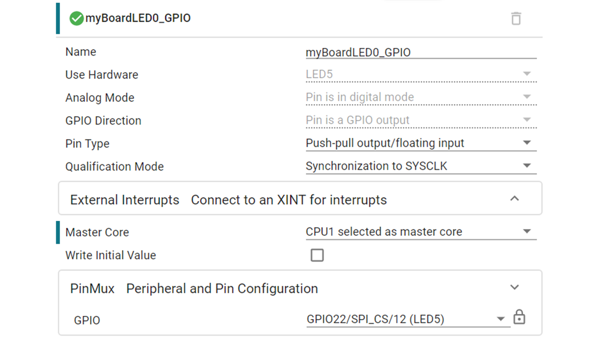
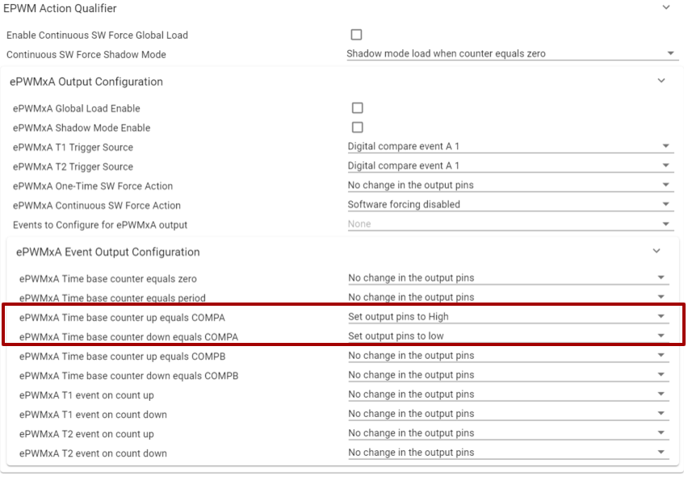
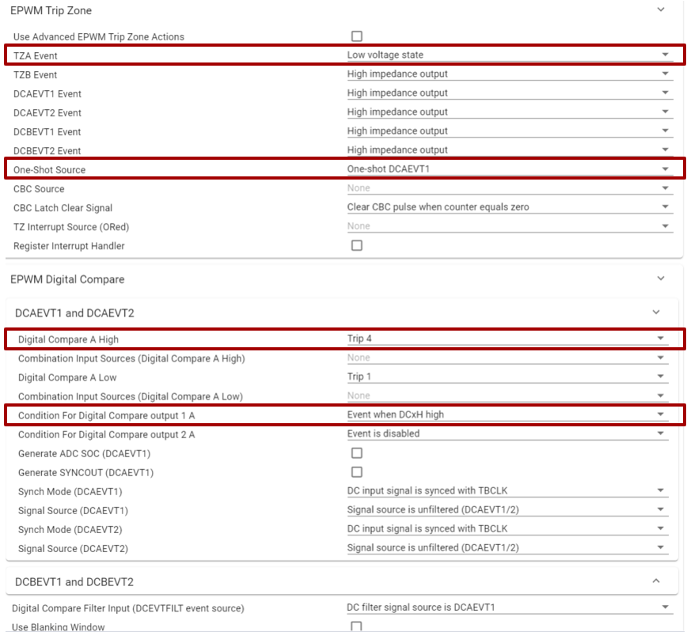
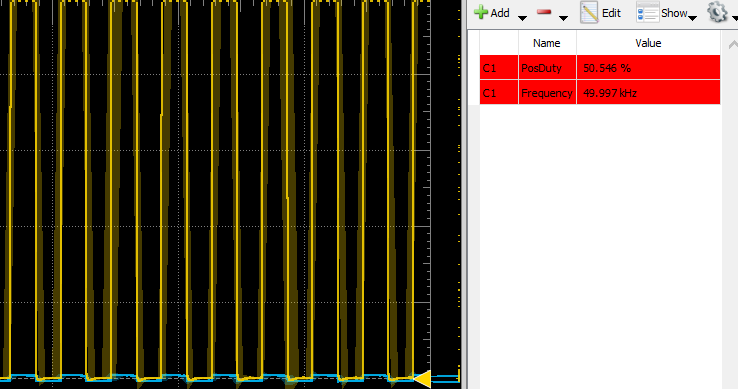

System Design Lab#
This lab will build on all of the different topics covered thus far. As a comprehensive system example, this lab will use the GPIO, EPWM, ADC, DAC, and CMPSS modules. This lab showcases the real strength of C2000 devices, as most of the functionality of this lab is handled by the peripherals, while reducing load on the CPU. This lab should leave the reader with a better understanding of the capabilities and function of their C2000 device.
Note:
This lab is the same as “Module 12- System Design” but it utilizes SysConfig to setup all of the peripherals.
Solution#
All solutions are available
in the directory: [C2000Ware_Install_Path]/training/device/[device_name].
Introduction#
In this lab exercise, the EPWM module is setup to output an EPWM signal with a duty cycle that will vary based on an ADC conversion result. Specifically, we will use the DAC to generate a signal for the ADC to sample. Using that ADC sample value, we then calculate a new duty cycle for the EPWM signal at the end of every ADC conversion. At the same time, a comparator will be used to monitor the DAC output, and it will cause a one-shot trip to drive the EPWM output low if the DAC output is above a certain threshold.

Lab Setup#
Hardware Setup#
You will need the following hardware for this lab:
A C2000 controlCARD or LaunchPad with the supplied USB cable.
Jumper cables (2 connections).
Use the supplied USB cable to connect your C2000 board’s USB port to the standard USB Type-A connector in your computer. You should see some LEDs light up on your board. In addition to powering the board, a JTAG communication link is also established between the device and Code Composer Studio. Refer to Getting Started module for more details if needed.
Software Setup#
The following software will need to be installed on your computer:
Note:
For this lab exercise a CCS version 11 or higher is required as well as a C2000Ware version 4 or higher.
Import Empty project#
Our first task is to import an empty project to our Code Composer Studio (CCS) workspace. The basic instructions are as follows:
Open CCS and go to Project→Import CCS Projects. A new window should appear. Ensure that the Select search-directory option is activated.
Click the Browse button and select the
[C20000ware_Install_dir]/training/device/[device]/empty_labdirectory. Note that the default Windows [C20000ware_Install_dir] isC:/ti/c2000/C2000Ware_4_xx_xx_xx.Under Discovered Projects, you should now see the
lab_[board]_[device]project. Select the appropriate project for either the control card or the launchpad.

Click Finish to import and copy the
lab_[board]_[device]project into your workspace.Rename the project to your liking
“Right-click on the project in Project Explorer pane”. Select ‘Rename’ from the drop down menu and rename the project to ‘c2000_system_design_lab’ or a name of your choosing.
Now click the ‘Down Arrow’ located to the left of the imported project to expand it and select lab_main.c. Right-click on the file, and select ‘Rename’ to rename the file to c2000_system_design_lab_main.c or a name of your choosing.
Part 1: LED Setup#
We will begin this lab by setting up the LED that will be used to observe the EPWM duty cycle change. The first step is to open up the sysconfig file within the project (.syscfg) and add a GPIO instance.
Select GPIO number for your device and board from the table below.
Device |
LaunchPad |
controlCARD |
|---|---|---|
F28379D |
Pin-66 (GPIO-31) |
Pin-66 (GPIO-31) |
F2838x |
n/a |
Pin-66 (GPIO-31) |
F28004x |
Pin-81 (GPIO-23) |
Pin-99(GPIO-31) |
F28002x |
Pin-2 (GPIO-31) |
Pin-2 (GPIO-31) |
F28003x |
Pin-83(GPIO-22) |
Pin-99(GPIO-31) |
F280013x |
n/a |
Pin-35 (GPIO-24) |
F280015x |
n/a |
Pin-41 (GPIO-24) |
The parameters should be filled like below.

Part 2: ADC Setup#
Add an ADC instance within SysConfig by clicking on the (+) next to ‘ADC’. By default the ADC resolution will be set to 12-bits. The prescalar should be changed to fit the image below (input clock/4).
After expanding the view for the ‘SOC Configurations’, “SOC/EOC number 0” is
enabled. We will be using ADCIN4 as the ADC channel and SOC0 as the start of
conversion. The trigger for that SOC will be EPWM1 which will be linked to
ADCSOCA since we are using one of the A channels of the ADC. A sample window of
15 SYSCLK counts will be utilized for this application.
Note for F2800137x ControlCARD:
If using the F2800137x ControlCARD, use ADCIN2 insetad of ADCIN4. This will be reflected in the F2800137x ControlCARD solution.
Lastly, looking at the interrupt configuration we need to enable ADCINT1 Interrupt and setup the source to be SOC/EOC number 0. Ensure to also
register the interrupt handlers.

Part 3: DAC Setup#
The next module we need to set up is the DAC module for devices which utilize
the DAC. For this example we will utilize DACA with a reference voltage of
ADC VREFHI reference voltage. Since we will utilize the DAC to generate a
reading being passed into the ADC pin we need to enable the output of the DAC
on the pin.
Note:
For devices that have a DAC Type 2, the gain mode needs to be set to 2. This
will appear as a SysConfig option within the DAC module. When this is done, the
analog reference within the ASYSCTL module of SysConfig’s Analog section needs to be
changed to ‘Internal’ with an Analog Reference Voltage of 1.65V

Part 4: CMPSS Setup#
The Comparator Subsystem is used in order to be able to detect when we need to
send a trip signal to the EPWM module due to the ADC conversion being above a
certain threshold. We will be using CMPSS2 since that is the CMPSS instance
that shares an input pin with ADCIN4 by default. After enabling the CMPSS, all
we have to change is setting up the compare value we will use; in this case
2500.
Note for F2800137x ControlCARD:
If using the F2800137x ControlCARD, CMPSS1 will be used instead of CMPSS2 because CMPSS1 shares a pin with ADCIN2.
Part 5: ePWM Setup#
In order to route the signal from the CMPSS module to the EPWM module we need to
use the EPWM X-BAR. Add an EPWMXBAR instance by clicking on the (+) next to it within
SysConfig. Set the trip input to TRIP4 because that is the first trip that we use
while using the EPWMXBAR. CMPSS2 CTRIPH is routed through MUX 2.
Note for F2800137x ControlCARD:
If using the F2800137x ControlCARD, CMPSS1 will be used instead of CMPSS2 because CMPSS1 shares a pin with ADCIN2. Therefore ensure the mux position is 00 with CMPSS1 CTRIPH selected.
Once the EPWMXBAR is setup, we can begin to setup the EPWM module. For this lab,
the High Speed Clock Divider needs to be set to 1 and a Time Base Period
value of 1000(this is assuming the EPWMCLK is setup to be 100MHz: refer to the
dedicated EPWM lab for more EPWM details). The counter mode will be set to
Up-Down Count Mode in order to have a symmetric EPWM output. For a 50% duty
cycle, the Counter Compare value will be half the value of the EPWM time base
period, in this case 500.
The action qualifier submodule will be set up to change the output of the EPWM to go high upon a CMPA up count match and down for a CMPA down count match.
The larger the CMPA value (TBPRD > CMPA) the smaller the duty cycle, since duty % = ON Time/ (ON Time + OFF Time)

The trip zone submodule will be utilized to set up the trip. We want our output
to go low whenever the trip signal occurs. Since we are only using EPWM1A, we
can set “TZA” to a low voltage state. Lastly, the one-shot source will be the
DCAEVT1.

Within the Digital Compare Module we need to setup Digital Compare A High as
Trip 4 and list the event to occur whenever the DCxH signal goes high.
Within the Event Trigger submodule is where the EPWM module is setup to trigger
the ADC. If you expand the ADC SOC Trigger window you will see the option to
enable the SOCA trigger and set it to occur when CMPA is incrementing. Every
occurrence of this will cause a trigger.
Part 6: ADC ISR#
The ADC ISR is where all of the calculations will be made for the control loop. The first step is to read the conversion results of the ADC.
//
// ADC A Interrupt 1 ISR
//
__interrupt void INT_myADCA_1_ISR(void)
{
//
// Get the latest ADC conversion result
//
adcAResult= ADC_readResult(ADCARESULT_BASE, ADC_SOC_NUMBER0);
Next, we need to utilize the ADC result to calculate the new value for the counter compare value and change the duty cycle. The formula that will be used is, CMPA duty = TBPRD * (1- ADC Conversion Result/4095)
//
// Update the CMPA value according to the ADC result
//
duty = adcAResult*ADC_SCALE;
CMPA_result = EPWM_PERIOD*(1-duty);
//
// Update the CMPA value with the new calculated value
//
EPWM_setCounterCompareValue(myEPWM1_BASE, EPWM_COUNTER_COMPARE_A, CMPA_result);
The following part is optional in case an oscilloscope is not accessible in order to monitor the ePWM’s output. An LED is setup to blink at a specific rate based on the calculated duty cycle.
Formula for ledBlinkRate: (100-(duty)(100))100
Note that ledBlinkRate is actually a counter of how many interrupts are needed before myBoardLED0_GPIO is toggled.
The duty cycle is calculated and then multiplied by 100 to adjust the numbers and make sure we can see the LED blink.
The higher the duty cycle, the faster the LED will blink.
//
// Calculate the LED blink rate
//
ledBlinkRate = (100-(duty*100))*100;
//
// Toggle the LED based upon the duty cycle chosen
//
if(LED_count++ > ledBlinkRate) // Toggle LED to change state
{
GPIO_togglePin(myBoardLED0_GPIO); // Toggle the pin
LED_count = 0; // Reset the counter
}
Lastly, we need to acknowledge the interrupt so that we can allow for further interrupts and check for an ADC overflow condition.
// Clear the interrupt flag
//
ADC_clearInterruptStatus(myADCA_BASE, ADC_INT_NUMBER1);
//
// Check if overflow has occurred
//
if(true == ADC_getInterruptOverflowStatus(myADCA_BASE, ADC_INT_NUMBER1))
{
ADC_clearInterruptOverflowStatus(myADCA_BASE, ADC_INT_NUMBER1);
ADC_clearInterruptStatus(myADCA_BASE, ADC_INT_NUMBER1);
}
//
// Acknowledge the interrupt
//
Interrupt_clearACKGroup(INTERRUPT_ACK_GROUP1);
}
Part 7: Main File Setup#
The last component to this lab is defining all of the functions and variables to be used throughout the lab. There are four main things to initialize/declare: Included header files, defines, global variables, and function prototypes. The defines include values that will not be changing throughout the program, such as the ePWM period. Globals are variables that will be utilized throughout the program such as the ADC result or the CMPA value. Lastly, the function prototypes are declarations of each of the module initialization functions as well as the ADC ISR function.
Remember that the DAC and LED portions are optional/device dependent.
//
// Included Files
//
#include "driverlib.h"
#include "device.h"
#include "board.h"
//
// Defines
//
#define EPWM_PERIOD 1000
#define ADC_SCALE 1/4096.0
#define comp_threshold 2500
//
// Globals
//
uint16_t adcAResult; /// value used to store ADC conversion
uint16_t CMPA_result; /// value used to calculate CMPA for new duty cycle value
uint16_t dacVal = 1000; /// value used to set the DAC output
uint16_t ledBlinkRate = 50; /// initialized value for LED blink rate
uint16_t LED_count = 0; /// LED counter
float duty; /// value that holds part of the calculation for CMPA
//
// Function Prototypes
//
__interrupt void INT_myADCA_1_ISR(void);
lab_main.c
To set up the device, we can use the following code to initialize the clocks, peripherals, and PIE vectors
Within main() add the following lines of code:
//
// Initialize device clock and peripherals
//
Device_init();
//
// Disable pin locks and enable internal pullups.
//
Device_initGPIO();
//
// Initialize PIE and clear PIE registers. Disables CPU interrupts.
//
Interrupt_initModule();
//
// Initialize the PIE vector table with pointers to the shell Interrupt
// Service Routines (ISR).
//
Interrupt_initVectorTable();
//
// Initialize all of the required peripherals using SysConfig
//
Board_init();
//
// Enable Global Interrupt (INTM) and realtime interrupt (DBGM)
//
EINT;
ERTM;
//
// Start ePWM1, enabling SOCA
//
EPWM_enableADCTrigger(myEPWM1_BASE, EPWM_SOC_A);
main()
Lastly, we need to write the functionality of the main() function. This includes writing a value to the buffered DAC (if used), and monitoring the one-shot trip flag. The flag is cleared whenever the trip condition is no longer present.
//
// Loop indefinitely
//
while(1)
{
//
// Set the value for the DAC
//
DAC_setShadowValue(myDACA_BASE, dacVal);
//
// Trip flag is set when CTRIP signal is asserted
//
if((EPWM_getTripZoneFlagStatus(myEPWM1_BASE) & EPWM_TZ_FLAG_OST) != 0U)
{
//
// Wait for comparator CTRIP to de-assert
//
while((CMPSS_getStatus(myCMPSS_BASE) & CMPSS_STS_HI_FILTOUT) != 0U)
{
//Update DAC value in case updated during this time
DAC_setShadowValue(myDACA_BASE, dacVal);
}
//
// Clear trip flags
//
EPWM_clearTripZoneFlag(myEPWM1_BASE, EPWM_TZ_INTERRUPT | EPWM_TZ_FLAG_OST | EPWM_TZ_FLAG_DCAEVT1);
}
}
Part 8: Running the lab in RAM#
The first step towards running this lab is to build the code and fix any errors. This is done through the build icon within CCS.
Note:
Before building the code, open the linker file [device]_generic_ram_lnk.cmd and replace the .text line with
.text : >> RAMGS0 | RAMGS1, PAGE = 1 to prevent memory issues.
Then, open a debug perspective and add adcAResult, CMPA_result,
EPwm1Regs.TZFLG.OST and duty to the expression windows.
Note:
If utilizing the DAC then add “dacVal” to the expressions window as well.

The following step is to set up the hardware. If connecting an external voltage
input to the ADC pin, please refer to the table below for the ADCINA4 pin
number.
If utilizing the DAC, then add a jumper wire to connect the ADCINA4
pin to the DACA output pin. Pin numbers are outlined in the table below.
LaunchPad
Device |
ADCINA4/CMPIN2 Pin |
DACA Pin |
|---|---|---|
F28379D |
69 |
30 |
F2838x |
n/a |
n/a |
F28004x |
46 |
70 |
F28002x |
66 |
No DAC, connect external voltage to ADC pin |
F28003x |
66 |
70 |
F280013x |
n/a |
n/a |
F280015x |
n/a |
n/a |
ControlCARD
Device |
ADCINA4/CMPIN2 Pin |
DACA Pin |
|---|---|---|
F28379D |
21 |
9 |
F2838x |
21 |
9 |
F28004x |
21 |
9 |
F28002x |
21 |
No DAC, connect external voltage to ADC pin |
F28003x |
17 |
9 |
F280013x |
ADCINA2 on Pin-15 |
9 |
F280015x |
21 |
n/a |
Once everything is connected, we can run the code by clicking the resume button in CCS (while still in debug mode).
At this point, you should see the LED blinking according to the rate of the ePWM duty cycle or the ePWM waveform through an oscilloscope if the input voltage to the ADC pin is below the comparator threshold of 2500 ((2500/4096)3.3 = ~2V)
As an example, when 1.5V is applied to the ADC pin, the expression window should look like the below:
In this example the adcAResult is 2060, which corresponds to a voltage reading of ~1.5V
ADC input voltage = (ADC reading/4096)VREFHI
ADC input voltage = (2060/4096)3V = 1.508 V
If using an oscilloscope to view the ePWM output, you’ll notice the output is a 50KHz output (if EPWMCLK is 100MHz) with a ~50% duty cycle (voltage range 0-3.3V in the figure below)

The new CMPA value is based on the following formula:
CMPA = TBPRD(1-Conversion/4096)
Thus, CMPA_result = 1000(1-(2060/4096))= 497
There will be slight fluctuations in these readings as the ADC is sampling and re-calculating the CMPA result.
Now, if you increase the voltage past a reading of 2500 (comp_threshold) then
the EPWM one-shot trip should activate and the ePWM output A should be driven
low.
In this case 2634 > 2500 so the EPWM outputs are driven low. You’ll also notice that the OST flag is set to 1 in the expression window.
Once the input voltage goes below the comparator threshold, the one-shot trip flag will be cleared and the ePWM will resume normal operation.
If the DAC is being used instead of an external input voltage to the ADC, you’ll notice similar behavior. The current value we set in the DAC module is 1000, so the ADC should be reading close to this value when the jumper is connected between the DACA pin and the ADC pin.
We can change this value in the Expressions Window by clicking on it and
changing the value. If we set it to something above the comp_threshold value
then the ePWM outputs will go low and the OST Flag will be set to 1.
You have now completed the lab. Terminate the active debug session using the Terminate button. This will close the debugger and return Code Composer Studio to the CCS Edit perspective view.
Part 9: Running the lab in FLASH#
The final step for this lab is executing the program in Flash. To do this we
will utilize the FLASH build configuration that is built into the project.
Right click on the project -> Select “Build Configurations” -> “Set
Active” -> “CPU1_FLASH”. Detailed information for what this configuration is
changing is outlined in the following FLASH FAQ
Now, when the “Debug” icon is clicked, the FLASH will automatically be erased and reprogrammed with the project’s content.
In this case, if the DAC is being used as the source for the ADC then you will not be able to change the value of ‘dacVal’. If you are supplying an external voltage to the ADC input pin, then you should see the change in ePWM duty and LED blink rate as the input voltage is changed.
Example of the DAC version while running the program from Flash (0-3.3V range):
If you disconnect your device from the power source and reconnect you should see the program still executing since the program is located in FLASH.
Full Solution#
The full solution to this lab exercise is included as part of the C2000Ware SDK.
Import the project from [C2000Ware_Install_Path]/training/device/[device_name]/system_design/lab_systemdesign. Note that the
solution includes code for both the ADC and DAC, but it will still compile on
devices that do not have a buffered DAC.
Feedback
Please provide any feedback you may have about the content within C2000 Academy to: c2000_academy_feedback@list.ti.com